Configure AMQP binding for REST, Messaging, and SOAP services
Learn how to create an AMQP binding for REST, Messaging, and SOAP services and use with a virtual service.
Using the Messaging Binding
Supported Platforms: 7.2
Table of Contents
- Introduction
- Step 1 - Add Messaging Binding (AMQP or JMS)
- Step 2 - Add AMQP Listener
- Step 3 - Add JMS Listener
- Step 4 - Assign Messaging Binding to Service
- Step 5 - Send Requests to API Using ActiveMQ
- Step 6 - Create Virtual Service to Provide RESTful Interface for Placing Messages
- Step 7 - Logging
Introduction
This topic describes how to perform the following tasks in Akana Policy Manager.
- Create AMQP binding for services of any type (REST, Messaging, SOAP).
- Create a virtual service that provides a messaging (AMQP or JMS) interface to one or more existing services of any type (REST, Messaging, SOAP).
- Create a virtual service that provides a RESTful interface for placing messages onto, and pulling messages from a JMS or AMQP queue.
back to top
Step 1 - Add Messaging Binding (AMQP or JMS)
- Launch the Policy Manager Management Console.
- Select Create Physical Service, and then create a physical service using the WADL file at http://www.ebi.ac.uk/ebisearch/ws/rest?_wadl
- Navigate to Configure > Registry > Bindings and select Add Binding.
- Select the service you just added.
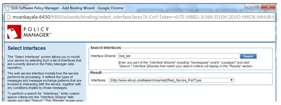
- On the next screen, select the Messaging Binding type.
- On the next screen, select AMQP as the Transport protocol.
- Provide Destination and Reply To fields with desired I/O/Fault Serializations.
- Select Part Type in Parts section. This section is used to assign Path parameters, Query parameters, Body parameters (for example, http://agubba-e6420:9901/VS/{domainid}/entry/{entryids}?fields={fields}&fieldurl={fieldurl}&viewurl={viewurl}&format{format}) is the URL to hit. In this case, the Binding screen configuration should be something like:
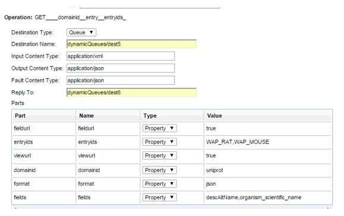
In the above example, the request will go to the following URL:
http://agubba-e6420:9901/VS/uniprot/entry/WAP_RAT,WAP_MOUSE?fields=descAltName,organism_scientific_name&fieldurl=true&viewurl=true&format=json
- Provide an XPath or SQL query for Use selector option (for example, Operation='get').
- After adding the required fields, finish the process.
- Similarly, select JMS in Transport field, if it is desired to have a Messaging Binding over JMS protocol.
back to top
Step 2 - Add AMQP Listener
- Select the Containers folder where you will be adding the AMQP listener, and select Add Listener.
- Select the AMQP Listener type.
- Add an AMQP listener with details as shown below.
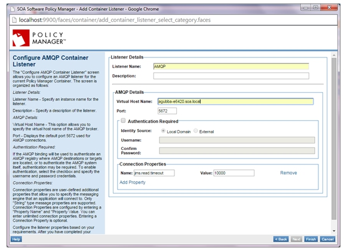
back to top
Step 3 - Add JMS Listener
- Select the Containers folder and Network Director (ND1) container where you will be adding the JMS listener, and select Add Listener.
- Select the JMS listener type.
- Add the JMS listener with details as shown below.
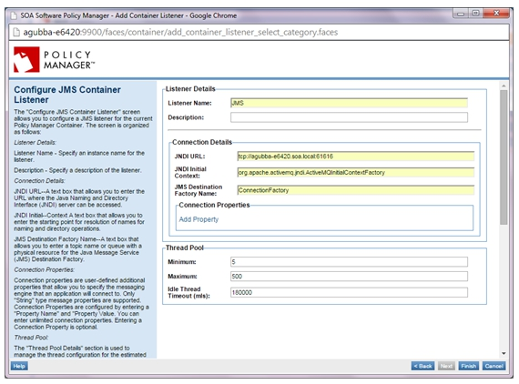
back to top
Step 4 - Assign Messaging Binding to Service
- Select the Services folder for the Physical Service. In the Service Overview section select Manage in the Interfaces and Bindings section.
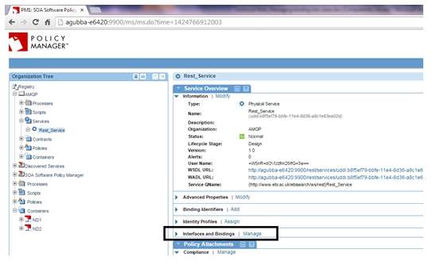
- On the Select Interfaces screen, select the Messaging Binding and assign it to the service (copy to the Interfaces Assigned panel), and complete the wizard.
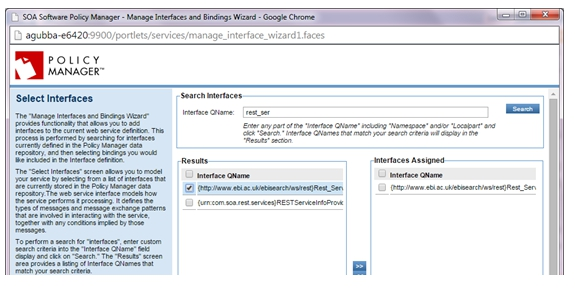
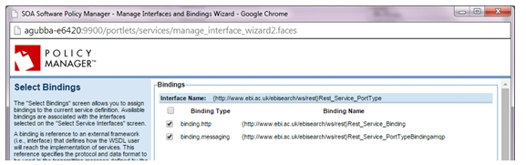
- Select Virtualize Service and virtualize the physical service on the AMQP/JMS listener on Network Director (ND1), and assign a service name (for example, VS1).
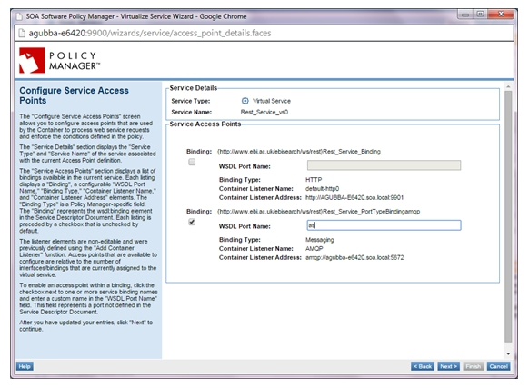
- The virtual service should be hosted on the ND1 where we have previously added the AMQP/JMS listeners.
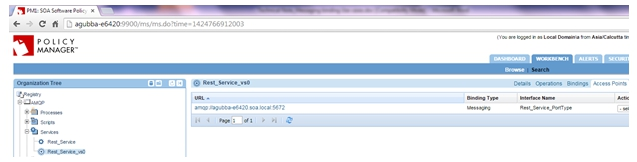
back to top
Step 5 - Send Requests to API Using ActiveMQ
- Network Directory (ND1) must be connected to an AMQP broker such as apache-activemq-5.10.0.
- Run ActiveMQ.
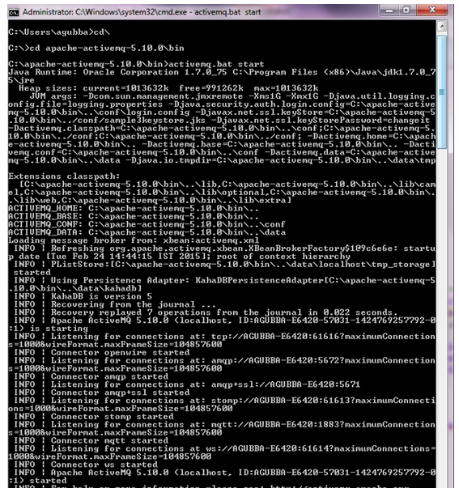
- Access the activeMQ client at http://agubba-e6420:8161/admin/.
- Navigate to the Queues tab or Topics tab depending on the destination type used during Messaging Binding creation.
- Select the Queue; in this scenario, dynamicQueues/dest5.
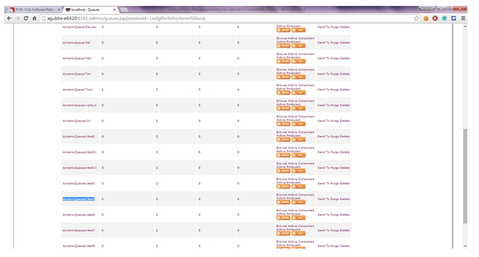
- Click on SendTo against the destination name.
- Provide the appropriate Correlation ID, ReplyTo and Message Body and send the request.
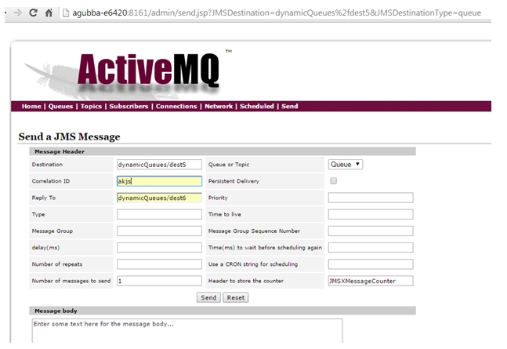
back to top
Step 6 - Create Virtual Service to Provide RESTful Interface for Placing Messages
- Virtualize the above service on Network Director (ND2) with HTTP binding, and assign a name (for example, VS2).
- Send requests to VS2.
- The requests will hit the VS1 > physical service.
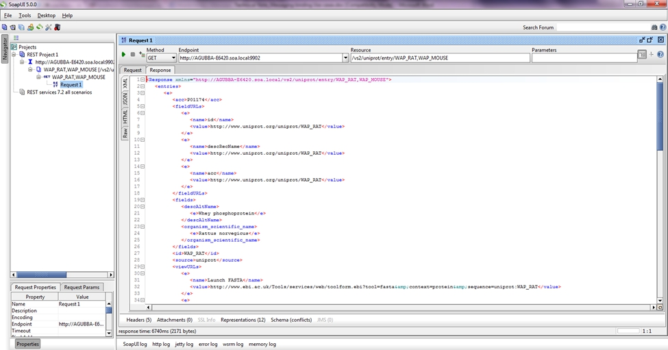
And the response is seen.
back to top
Step 7 - Logging
- If the Detailed Auditing policy is attached to VS1 and VS2, usage logs will be generated.
- VS2 logs:
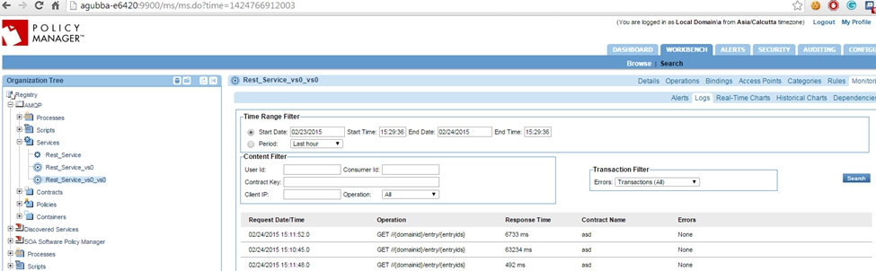
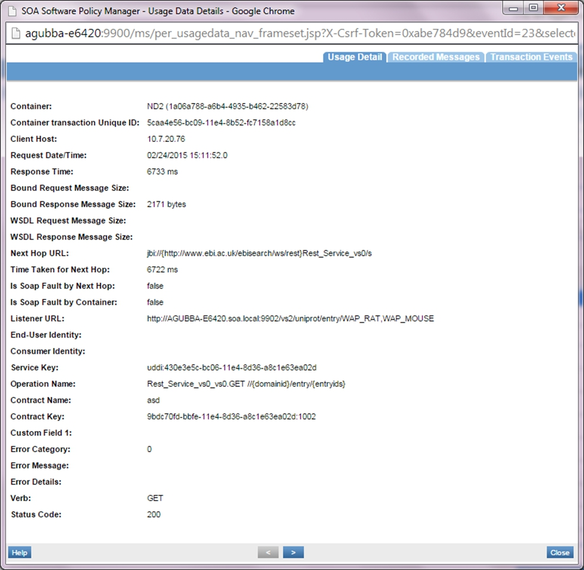
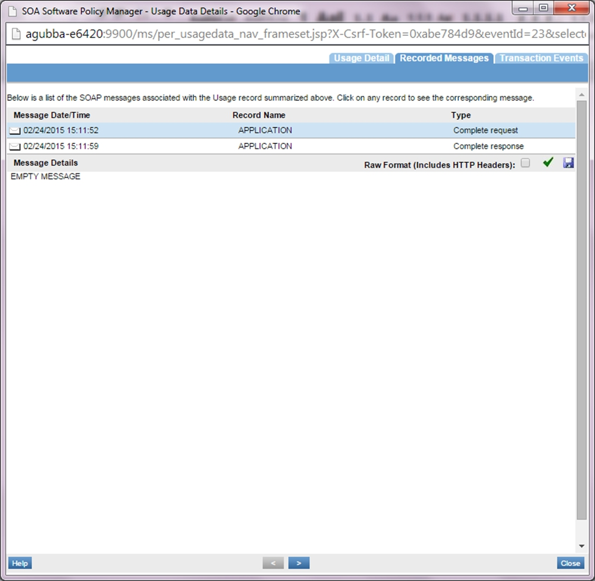
- VS1 logs:
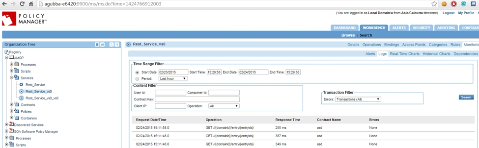
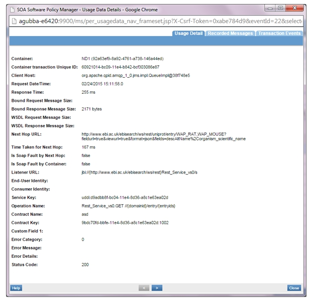
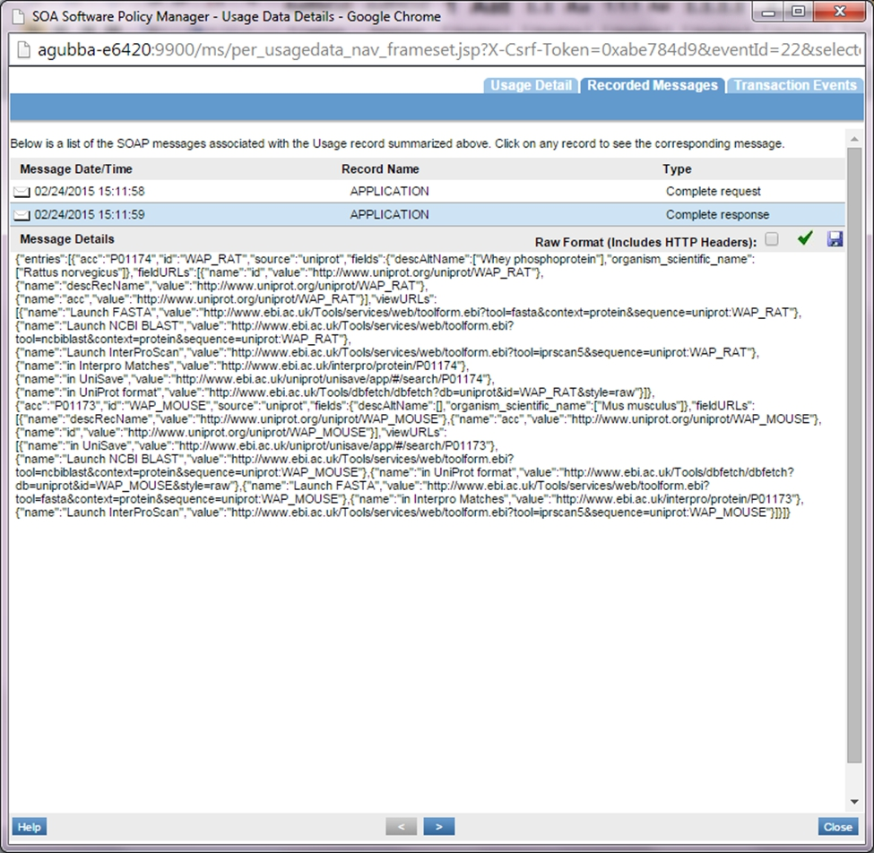
back to top